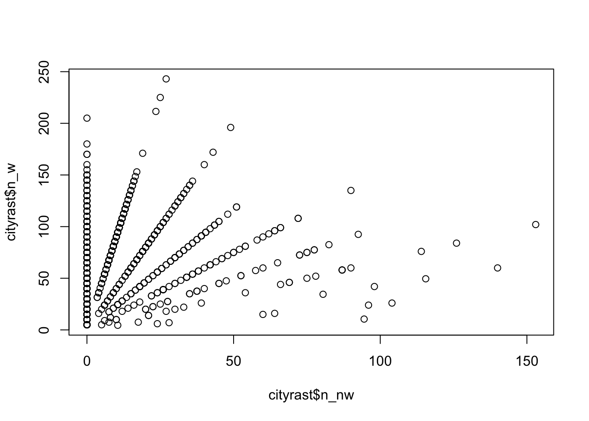

fsave <- function(x, file, location = "./data/processed/", ...) {
if (!dir.exists(location))
dir.create(location)
datename <- substr(gsub("[:-]", "", Sys.time()), 1, 8)
totalname <- paste(location, datename, file, sep = "")
print(paste("SAVED: ", totalname, sep = ""))
save(x, file = totalname)
}
fpackage.check <- function(packages) {
lapply(packages, FUN = function(x) {
if (!require(x, character.only = TRUE)) {
install.packages(x, dependencies = TRUE)
library(x, character.only = TRUE)
}
})
}
colorize <- function(x, color) {
sprintf("<span style='color: %s;'>%s</span>", color, x)
}
fMoranI <- function(x, y = NULL, weight, scaled = FALSE, na.rm = FALSE, alternative = "two.sided", rowstandardize = TRUE) {
if (is.null(y)) {
y <- x
}
if (dim(weight)[1] != dim(weight)[2])
stop("'weight' must be a square matrix")
nx <- length(x)
ny <- length(y)
if (dim(weight)[1] != nx | dim(weight)[1] != ny)
stop("'weight' must have as many rows as observations in 'x' (and 'y', for the bivariate case) ")
ei <- -1/(nx - 1)
nas <- is.na(x) | is.na(y)
if (any(nas)) {
if (na.rm) {
x <- x[!nas]
y <- y[!nas]
nx <- length(x)
weight <- weight[!nas, !nas]
} else {
warning("'x' and/or 'y' have missing values: maybe you wanted to set na.rm = TRUE?")
return(list(observed = NA, expected = ei, sd = NA, p.value = NA))
}
}
if (rowstandardize) {
ROWSUM <- rowSums(weight)
ROWSUM[ROWSUM == 0] <- 1
weight <- weight/ROWSUM
}
s <- sum(weight)
mx <- mean(x)
sx <- x - mx
my <- mean(y)
sy <- y - my
v <- sum(sx^2)
cv <- sum(weight * sx %o% sy)
obs <- (nx/s) * (cv/v)
cv_loc <- rowSums(weight * sx %o% sy)
obs_loc <- (nx/s) * (cv_loc/v)
if (scaled) {
i.max <- (nx/s) * (sd(rowSums(weight) * sx)/sqrt(v/(nx - 1)))
obs <- obs/i.max
obs_loc <- obs_loc/i.max
}
S1 <- 0.5 * sum((weight + t(weight))^2)
S2 <- sum((apply(weight, 1, sum) + apply(weight, 2, sum))^2)
s.sq <- s^2
k <- (sum(sx^4)/nx)/(v/nx)^2
sdi <- sqrt((nx * ((nx^2 - 3 * nx + 3) * S1 - nx * S2 + 3 * s.sq) - k * (nx * (nx - 1) * S1 - 2 *
nx * S2 + 6 * s.sq))/((nx - 1) * (nx - 2) * (nx - 3) * s.sq) - 1/((nx - 1)^2))
alternative <- match.arg(alternative, c("two.sided", "less", "greater"))
pv <- pnorm(obs, mean = ei, sd = sdi)
if (alternative == "two.sided")
pv <- if (obs <= ei)
2 * pv else 2 * (1 - pv)
if (alternative == "greater")
pv <- 1 - pv
list(observed = obs, expected = ei, sd = sdi, p.value = pv, observed_locals = obs_loc)
}
fMoranI <- compiler::cmpfun(fMoranI)
# Moran's I for aggregated
# data_____________________________________________________________________
fMoranIdens <- function(x, y = NULL, weight, dens = NULL, N = length(x)) {
# Adapted from Anselin (1995, eq. 7, 10, 11)
# https://onlinelibrary.wiley.com/doi/epdf/10.1111/j.1538-4632.1995.tb00338.x dens: the
# proportion of individuals in each cell over the district population if individual level data
# dens is.null and N is simply length of input if we have aggregate data then N should be total
# population size (or actually just a large number)
if (is.null(y)) {
y <- x
}
# N <- length(x)
if (is.null(dens)) {
dens <- rep(1/N, times = N)
}
# correct scaling of opinions for densities #this is really inefficient, should use weighted
# var from hmsci
v1dens_ind <- rep(x, times = (dens * N))
v1dens <- (x - mean(v1dens_ind))/sd(v1dens_ind)
v2dens_ind <- rep(y, times = (dens * N))
v2dens <- (y - mean(v2dens_ind))/sd(v2dens_ind)
# (density) weighted proximity matrix
w <- weight
wdens <- t(dens * t(w))
wdens <- wdens/rowSums(wdens)
# density and proximity weighted locals
localI <- (v1dens * wdens %*% v2dens) #formula 7
# correct the normalization constants
m2 <- sum(v1dens^2 * dens)
S0 <- N #we know the weight matrix for the individual level should add up to N
ydens <- S0 * m2
globalI <- sum(localI * dens * N)/ydens # formula 10/11
return(list(globalI = globalI, localI = as.numeric(localI)))
}
fMoranIdens <- compiler::cmpfun(fMoranIdens)fPvar <- function(votes, positions, method = "euclidean") {
positions <- positions * 2 #this function wants a range of 2
distances <- as.matrix(dist(positions, method = method))
votes_mat <- votes %o% votes
diag(votes_mat)[diag(votes_mat) > 1] <- diag(votes_mat)[diag(votes_mat) > 1] - 1
Pvar <- Hmisc::wtd.var(as.numeric(distances), as.numeric(votes_mat))
return(Pvar)
}
fPvar <- compiler::cmpfun(fPvar)
fPV <- function(votes, positions, method = "euclidean") {
shares <- votes/sum(votes, na.rm = TRUE)
pbar <- rep(NA, NCOL(positions))
pbar <- as.numeric(t(shares) %*% positions) #center of mass / mean position
# distances to mean
if (method != "sq") {
if (NCOL(positions) == 1) {
distances <- as.matrix(stats::dist(c(pbar, positions), method = method))[, 1][-1]
} else {
distances <- as.matrix(stats::dist(rbind(pbar, positions), method = method))[, 1][-1]
}
}
# if (method=='sq') {distances <- ??}
# defining the constant
if (method == "euclidean") {
k <- 2/sqrt(NCOL(positions))
}
if (method == "manhattan") {
k <- 2/NCOL(positions)
}
if (method == "sq") {
k <- 1
}
PV <- k * sum(shares * distances)
return(PV)
}
fPV <- compiler::cmpfun(fPV)
fPER <- function(alpha = 1, votes, positions, method = "euclidean") {
positions <- positions
distances <- as.matrix(stats::dist(positions, method = method))
shares <- votes/sum(votes, na.rm = TRUE)
sharesi <- shares^(1 + alpha)
sharesj <- shares
ER <- as.numeric(sharesi %*% distances %*% sharesj)
return(ER)
}
fPER <- compiler::cmpfun(fPER)fpackage.check(c("sf", "seg", "leaflet", "ggplot2", "ggmap", "compiler"))## [[1]]
## NULL
##
## [[2]]
## NULL
##
## [[3]]
## NULL
##
## [[4]]
## NULL
##
## [[5]]
## NULL
##
## [[6]]
## NULLload("./data/processed/20220712raster_vor.RData")
rast <- x
rm(x)
load("./data/processed/20220712shapes.RData")
shapes <- x
rm(x)
voronoi <- shapes[[6]]
load("./data/processed/20220708polling_df")
pollstations <- x
rm(x)
# Ensuring that the class of 'pollstations' is 'sf' and the CRS is correct:
pollstations <- sf::st_as_sf(x = as.data.frame(pollstations), crs = sf::st_crs("+proj=longlat +datum=WGS84"),
coords = c("long", "lat"))suppressMessages(sf_use_s2(FALSE))
pollstations <- sf::st_intersection(x = pollstations, y = voronoi)## although coordinates are longitude/latitude, st_intersection assumes that they are planar## Warning: attribute variables are assumed to be spatially constant throughout all geometriestile = 3000
tilerast <- subset(rast, rast$voronoi == tile)
station <- subset(pollstations, pollstations$voronoi == tile)
voronoi_tile <- voronoi[tile, ]
leaflet::leaflet(tilerast) |>
leaflet::addTiles() |>
leaflet::addProviderTiles(providers$Stamen.Toner) |>
leaflet::addPolygons(data = voronoi) |>
leaflet::addPolygons(data = voronoi_tile, color = "red") |>
leaflet::addCircles(color = "green") |>
leaflet::addCircles(data = station, color = "red", opacity = 1) |>
leaflet::setView(lng = sf::st_coordinates(station)[, 1], lat = sf::st_coordinates(station)[, 2],
zoom = 14)city <- "Gouda"
cityrast_id <- which(rast$GM_NAAM == city) # will come handy later ;)
cityrast <- rast[cityrast_id, ]distmat <- matrix(sf::st_distance(cityrast), ncol = nrow(cityrast))
distmat <- distmat/1000
diag(distmat) <- 0.052140543316egocell <- 100 # we pick the 100th cell in the raster.
palette <- leaflet::colorNumeric(
palette = "viridis",
domain = distmat[egocell,]
)
leaflet::leaflet(cityrast) |>
leaflet::addTiles() |>
leaflet::addProviderTiles(providers$Stamen.Toner) |>
leaflet::addCircles( # Plotting the raster with color to represent distances
data = cityrast,
label = ~round(distmat[egocell,], digits = 3), # Hovering shows the distance
color = ~palette(distmat[egocell,]),
opacity = 0.7
) |>
leaflet::addCircles( # Plotting our "egocell" (in red)
data = cityrast[egocell,],
label = "Ego",
color = "red",
opacity = 1
) |>
leaflet::addLegend(
"topleft",
pal = palette,
values = ~distmat[egocell,],
title = "Distance to ego (km)",
opacity = 0.8
)s <- 2
proxmat <- exp(-distmat * s)egocell <- 100 # we pick the 100th cell in the raster.
palette <- leaflet::colorNumeric(
palette = "viridis",
domain = proxmat[egocell,]
)
leaflet::leaflet(cityrast) |>
leaflet::addTiles() |>
leaflet::addProviderTiles(providers$Stamen.Toner) |>
leaflet::addCircles(
data = cityrast,
label = ~round(proxmat[egocell,], digits = 3),
color = ~palette(proxmat[egocell,]),
opacity = 0.7
) |>
leaflet::addCircles( # Plotting our "egocell" (in red)
data = cityrast[egocell,],
label = "Ego",
color = "red",
opacity = 1
) |>
leaflet::addLegend(
"topleft",
pal = palette,
values = ~proxmat[egocell,],
title = "Proximity to Ego",
opacity = 0.8
)cityrast$pnw <- cityrast$percentage_niet_westerse_migr_achtergr
cityrast$pnw[cityrast$pnw == -99997] <- 0 # or some other arbitrary value
cityrast$pnw <- cityrast$pnw/100cityrast$n_nw <- cityrast$aantal_inwoners * cityrast$pnw
cityrast$n_w <- cityrast$aantal_inwoners - cityrast$n_nw
plot(cityrast$n_nw, cityrast$n_w)
palette <- leaflet::colorNumeric(
palette = "viridis",
domain = cityrast$pnw
)
leaflet::leaflet(cityrast) |>
leaflet::addTiles() |>
leaflet::addProviderTiles(providers$Stamen.Toner) |>
leaflet::addCircles(
data = cityrast,
color = ~palette(cityrast$pnw),
#radius = ~cityrast$aantal_inwoners,
opacity = ~(cityrast$aantal_inwoners / max(cityrast$aantal_inwoners))#0.7
) |>
leaflet::addLegend(
"topleft",
pal = palette,
values = ~cityrast$pnw,
title = "Prop. NW migr. background",
opacity = 0.8
)fcalcLocalEnv <- function( # "data" is a 2-columns matrix
data, coords, distmat, s, proj4string = sp::CRS("+proj=longlat +datum=WGS84")
) {
# Recalculating proximities:
proxmat <- exp(- distmat * s)
# Calculating the local environment from scratch:
#if(is.null(data)) data <- as.matrix(cbind(cityrast$n_w, cityrast$n_nw))
env <- matrix(NA, nrow = nrow(data), ncol = 2)
for (i in 1:nrow(data)) {
env[i,1] <- stats::weighted.mean(x = data[,1], w = proxmat[i,])
env[i,2] <- stats::weighted.mean(x = data[,2], w = proxmat[i,])
}
# And now we bundle this all together in an object of class
# "SegLocal", which allows us to use the functions from the package
# "seg" to calculate the various measures of segregation.
return(seg::SegLocal(
coords = coords,
data = data,
env = env,
proj4string = proj4string
))
}
fcalcLocalEnv <- compiler::cmpfun(fcalcLocalEnv)myenv <- fcalcLocalEnv(data = as.matrix(cbind(cityrast$n_w, cityrast$n_nw)), distmat = distmat, coords = sf::st_coordinates(cityrast),
s = s #already defined above
)seg::spatseg(env = myenv)##
## Reardon and O'Sullivan's spatial segregation measures
##
## Dissimilarity (D) : 0.1096
## Relative diversity (R): 0.004
## Information theory (H): 0.0062
## Exposure/Isolation (P):
## Group 1 Group 2
## Group 1 0.8338753 0.1661247
## Group 2 0.8151089 0.1848911
## --
## The exposure/isolation matrix should be read horizontally.
## Read 'help(spseg)' for more details.I <- fMoranI(
x = myenv@data[,1],
y = myenv@data[,2],
weight = proxmat, ## The diagonal in distmat is ~51 meters
scaled = FALSE,
rowstandardize = TRUE
)
print(I[1:4])## $observed
## [1] 0.005290071
##
## $expected
## [1] -0.001025641
##
## $sd
## [1] 0.002639426
##
## $p.value
## [1] 0.01671873cityvor <- voronoi[voronoi$voronoi %in% rast$voronoi[cityrast_id], ]library(dplyr)
library(tidyr)
load("data/processed/20220707positions_data.RData")
positions <- x %>%
select(-dpes_sentence_death) %>%
drop_na(pop_immigration) %>%
mutate(party_match=case_when(
party=="50Plus" ~ "PLUS50",
TRUE ~ party)) %>%
select(-party) # slope of the distance decay function:
s <- 2
# For each voronoi tile "i" in the city...
for (u in 1:nrow(cityvor)) {
#... we find which raster cells belong to tile "i".
#tilerast <- subset(cityrast, cityrast$voronoi == cityvor$voronoi[u])
tilerast <- cityrast[cityrast$voronoi == cityvor$voronoi[u],]
# And if there are more than 2 tiles...
if (nrow(tilerast) > 1) {
# ... then calculate distances among its raster cells...
distmat <- matrix(sf::st_distance(tilerast), ncol = nrow(tilerast))
distmat <- distmat / 1000
#... set the diagonal of the distance matrix...
diag(distmat) <- 0.052140543316
#... calculate the local environment of each cell...
myenv <- fcalcLocalEnv(
data = as.matrix(cbind(tilerast$n_w, tilerast$n_nw)),
distmat = distmat,
coords = sf::st_coordinates(tilerast),
s = s
)
#use the seg package to calculate segregation measures.
# use your own segregtion functions and functions of oasisR
proxmat <- exp(-distmat*s)
#... calculate the I...
#density corrected based on proportions
I <- fMoranIdens (
x = myenv@data[,1] / rowSums(myenv@data),
weight = proxmat, ## The diagonal in distmat is ~51 meters
dens = rowSums(myenv@data) / sum(myenv@data),
N = sum(myenv@data)
)
#
# I <- fMoranI (
# x = myenv@data[,1],
# y = myenv@data[,2],
# weight = proxmat, ## The diagonal in distmat is ~51 meters
# scaled = FALSE,
# rowstandardize = TRUE
# )
#
#... and, finally, save the I estimate to our data.frame "vor":
cityvor$moranI[u] <- I$globalI
spatialseg <-seg::spatseg(env = myenv)
cityvor$d[u] <- spatialseg@d
js_df <- pollstations[pollstations$voronoi==u,]
#correct positions
#votes <- c(js_df$BIJ1, js_df$PvdD, js_df$GL, js_df$SP, js_df$PvdA, js_df$DENK,
# js_df$Volt, js_df$D66, js_df$CU, js_df$PLUS50, js_df$PVV, js_df$CDA, js_df$BBB, js_df$SGP, js_df$VVD, js_df$JA21, js_df$FvD)
js_df_match <- js_df %>%
st_drop_geometry() %>%
select(VVD:Wij.zijn.Nederland) %>%
gather(key="party", value = "votes") %>%
left_join(positions, by=c("party"="party_match")) %>%
drop_na() %>%
mutate(party_pos=case_when(
party=="BIJ1" ~ 1,
party=="PvdD" ~ 2,
party=="GL" ~ 3,
party=="SP" ~ 4,
party=="PvdA" ~ 5,
party=="DENK" ~ 6,
party=="Volt" ~ 7,
party=="D66" ~ 8,
party=="CU" ~ 9,
party=="PLUS50" ~ 10,
party=="PVV" ~ 11,
party=="CDA" ~ 12,
party=="BBB" ~ 13,
party=="SGP" ~ 14,
party=="VVD" ~ 15,
party=="JA21" ~ 16,
party=="FvD" ~ 17,
TRUE ~ 99)) %>%
arrange(party_pos)
cityvor$Pvar[u] = fPvar(votes = js_df_match %>% pull(votes), positions = js_df_match %>% pull(pop_immigration))
cityvor$PER[u] = fPER(votes = js_df_match %>% pull(votes), positions = js_df_match %>% pull(pop_immigration))
cityvor$PV[u] = fPV(votes = js_df_match %>% pull(votes), positions = js_df_match %>% pull(pop_immigration))
}
}cityvor_non_na <- cityvor %>% drop_na()
cor(cityvor_non_na$d, cityvor_non_na$Pvar,method = "pearson")## [1] -0.1747635